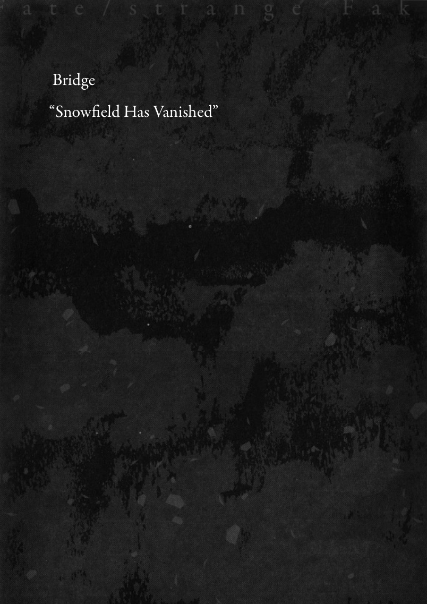

"Snowfield Desapareceu"
Em um dia, em um instante - a Cidade de Snowfield desapareceu da face da Terra.
Uma pousada nas montanhas americanas
Uma pousada luxuosa no interior de um Campo Limitado natural, bem no fundo das montanhas. Em seu centro, havia uma sala de conferências onde os financiadores da Guerra do Santo Graal de Snowfield andavam de um lado para o outro, nervosos.
O pessoal responsável por decidir a Operação [Queda da Aurora] - apagar tudo na área de Snowfield por meio do impacto de uma ogiva especial - continuava sendo sacudido pelo fluxo de informações em tempo real.
"O Furacão Inanna encolheu e se estacionou num ponto a 20 km de Snowfield."
"Certo... Esperamos que ele desapareça assim que removermos o Graal Maior de Snowfield, mas mantenham-se vigilantes. Soltem as versões oficiais para todas as instituições de imprensa no instante em que isso acontecer. Aceitem parte dos protestos e exigências da Santa Igreja. Mas não, repito, não deixem que interfiram além do estritamente necessário."
"Recebemos contato da Torre do Relógio. Eles exigem rigor total na identificação dos magos sobreviventes."
"Já íamos agir assim de qualquer forma. Enquanto Faldeus estiver extraindo o pseudo-core do Graal Maior, há grande chance de aquilo ser roubado. Mantenham-no sob observação."
Enquanto relatórios chegavam de todos os setores, os líderes continuavam distribuindo ordens precisas. Até que -
"General...!"
Alguém gritou o posto do general sem mencionar seu nome, e isso mudou o tom da sala. O general de uniforme ergueu a sobrancelha para o homem, chefe da divisão de vigilância. O sujeito, parado na entrada da sala de conferência, endireitou a postura, mas continuava tremendo.
"Snowfield... desapareceu."
"Hã? Como assim?"
"Seja mais claro nos seus relatórios."
"A vigilância saiu do ar?"
As pessoas na sala exigiram explicações. Se um grande grupo de magos estivesse em movimento, era possível que tivessem bloqueado os satélites de observação. Todos pediram um relatório mais detalhado para saber como responder, mas -
"Não, os equipamentos de observação nos satélites continuam operando normalmente... ao que tudo indica."
Depois desse comentário mal articulado, o chefe acionou alguns botões no console da sala de conferência, projetando as imagens dos monitores da sala de vigilância.
"Repito. Snowfield... desapareceu."
"O que é que eu estou vendo?"
O general viu. Todos os outros mentores da Guerra do Santo Graal viram. A anomalia que estava acontecendo em tempo real em Snowfield. Todos engoliram em seco, mudos diante das imagens de satélite nos monitores. Aquele grupo, escolhido a dedo por seu entendimento profundo tanto da ciência quanto da magia, foi incapaz de processar a anormalidade que via.
Todos ficaram imóveis, sem conseguir descrever as imagens, até que o chefe da vigilância continuou.
"Isso não é tudo! O Furacão Inanna desapareceu ao mesmo tempo. Não há nuvens detectáveis."
"Repita..."
"A contagem regressiva para o Código 983: [Queda da Aurora] continua em andamento. Como devemos prosseguir?"
"Preparem-se para qualquer situação... Decidiremos no último segundo se seguimos em frente ou não."
Com uma expressão amarga, o comandante militar conseguiu fazer as palavras saírem.
"Em uma escala dessas... a situação é visível a olho nu para os observadores em Las Vegas?"
"Magias de ocultação em grande escala estão sendo empregadas nas cidades ao redor... Nós exibimos as imagens fabricadas destinadas a ocultar a execução da [Queda da Aurora]. Ainda assim, é possível que magos consigam ver através delas."
"Essas imagens estão sob classificação máxima de segurança. Se qualquer coisa vazar, espalhem vídeos falsos semelhantes e façam o autor parecer um editor de péssimo gosto."
O que as imagens de satélite mostravam era - um círculo gigantesco. Um círculo tão belo que parecia ter sido desenhado com compasso. A área que antes continha Snowfield fora recortada do mapa, e no lugar dela havia a mais negra escuridão.
E a parte mais estranha era - um círculo de cor diferente no centro do círculo negro. Pela câmera aérea, era impossível determinar o que aquilo era, mas as imagens laterais captadas por uma câmera em solo deixavam tudo claro.
Uma esfera.
Uma esfera descomunal, com quilômetros de diâmetro, flutuava a cerca de 150 m acima do nível do mar. A esfera girava lentamente, sem se afastar nem um milímetro de sua posição. Era como se uma lua minúscula tivesse surgido de repente, com uma órbita perfeitamente alinhada à rotação e à revolução da Terra.
A esfera parecia artificial aos olhos de quem a observava. Sua cor de base lembrava tijolos secos, e ela era decorada com belas pedras azuis e douradas em formas geométricas, semelhantes a lápis-lazúli.
Enquanto isso, nada podia ser observado na superfície negra como breu. O centro urbano de Snowfield, as áreas residenciais, as ruas, o distrito industrial - e, é claro, seus oitocentos mil habitantes - haviam simplesmente sumido.
O objeto parecia o ovo gigantesco de um deus ou de um demônio, ou ainda um planeta desconhecido que de repente passara a flutuar sobre a Terra.
Seria aquilo um recipiente destinado a concentrar maldições?
Ou um útero prestes a dar à luz alguma coisa? Aos organizadores desta Guerra do Santo Graal Falsa, nada restava além de assistir à conclusão inevitável.
Quando algo saísse daquela esfera, tudo chegaria ao fim. Terminaria antes que qualquer um conseguisse sequer decidir se aquilo que estivesse nascendo era algo positivo ou negativo.
A questão era saber se a ruína daquilo também significaria a ruína do mundo. A resposta ainda era desconhecida para todos. Os fios do destino cruzados pela Guerra do Santo Graal de Snowfield convergiam, avançando para o fim de tudo.